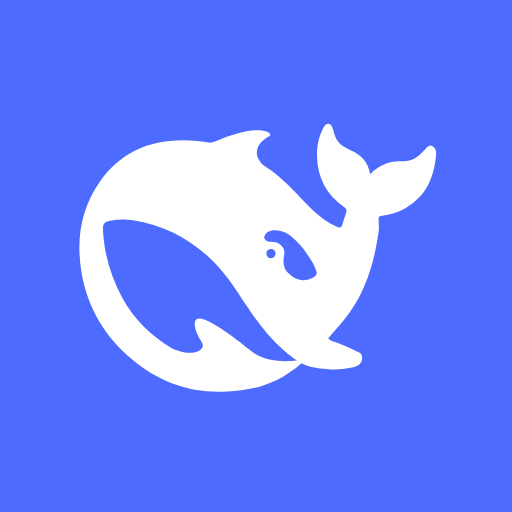

Connecting…
This window connects to the harness server on your machine and loads the
latest UI automatically. Start the server with dsh web
(or pnpm dsh web from the repository) — the window
reconnects on its own.